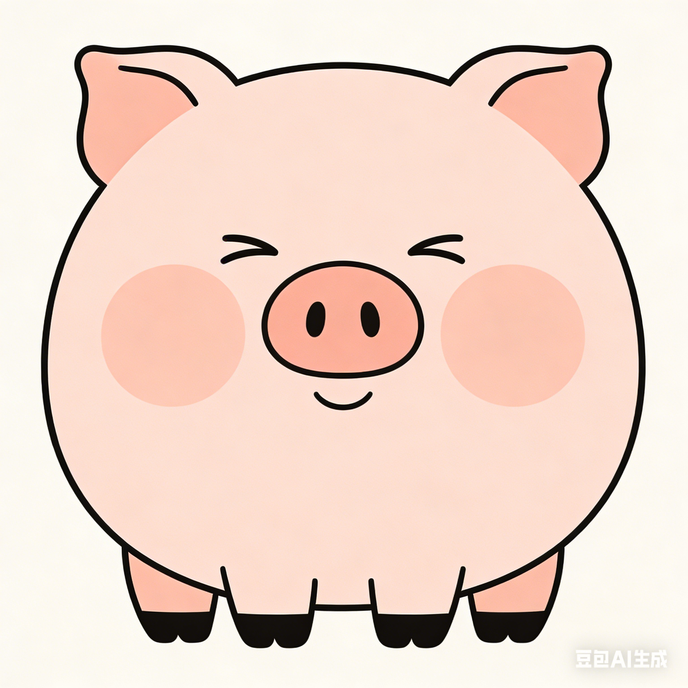

将您的研究提交至 garbage · 或申请撤稿（申请受理，处理不保证）
请完整填写以下各项投稿信息。准确、详尽的作者信息及摘要有助于编辑部对稿件进行分类与处理。 标注星号（*）的字段为必填项，其余字段为选填项，但建议尽量填写以确保稿件得到妥善处理。 所有提交信息将严格保密，仅用于本刊编辑流程。
多位作者请用逗号分隔。如需匿名，填"某某某"即可。
仅支持 PDF 格式，文件大小不超过 50MB。
本刊郑重承诺：撤稿申请将在收到后第一时间被严肃对待。 具体来说，会被认真地放进一个名为"待处理"的文件夹。 文件夹上次打开时间：不明。
致每一位还在坚持做研究的你：辛苦了。
学术之路漫长，拒稿是常态，坚持是选择。 garbage 以幽默之名，向每一位认真钻研、默默付出的研究者致敬。 你的努力，值得被记录。
本站内容为学术幽默创作 · 不涉及政治敏感内容 · 不代表任何机构立场 · 请勿将论文内容作为严肃学术参考